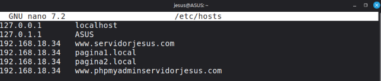
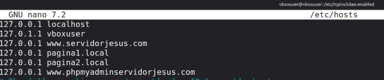
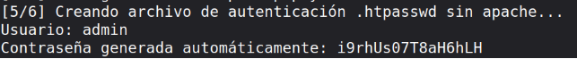
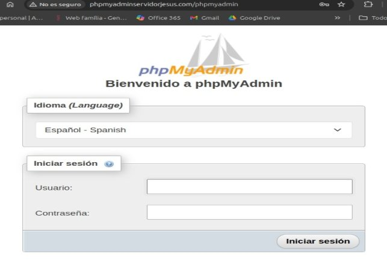
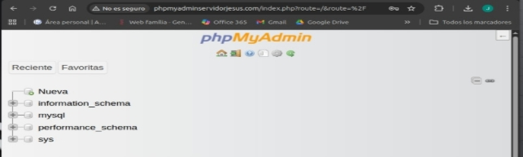

phpmyadmin
JESÚS ÁLVAREZ OLMO 2 ASIX
Objectivo: Configurar phpMyAdmin en mi servidor Nginx, asegurarlo y dejarlo todo automatizado con scripts Bash.
- Creo la estructura del proyecto
mkdir -p /home/vboxuser/practica4_phpmyadmin/{conf,scripts}
- Entro en la carpeta practica4_phpmyadmin
cd /home/vboxuser/practica4_phpmyadmin
- Dentro creo la carpeta conf, README.md y creo la carpeta scripts. Y dentro de la carpeta scripts pongo los scripts .env (donde se tienen que coger las contraseñas), estará el script install-lemp.sh (con instalacion del LEMP) y estará el script install_phpmyadmin.sh (con instalacion de phpmyadmin).
- Borro todo rasto de mariaDB porque creaba conflicto más adelante con mysql
sudo apt purge 'mariadb
sudo systemctl stop mysql
sudo apt purge mysql-server mysql-client mysql-common mariadb* -y sudo apt autoremove --purge -y
sudo apt autoclean
- A veces quedan datos en disco que impiden arrancar
sudo rm -rf /etc/mysql /var/lib/mysql /var/log/mysql /var/run/mysqld sudo systemctl restart nginx
sudo systemctl restart php8.3-fpm
- E instalo MySQL
sudo apt update
sudo apt install mysql-server -y sudo systemctl status mysql
-Creo de nuevo el directorio del socket
sudo mkdir -p /var/run/mysqld
sudo chown mysql:mysql /var/run/mysqld sudo chmod 755 /var/run/mysqld
- Luego vamos a crear el archivo de configuración conf/phpmyadmin (el que Nginx usará para servir phpMyAdmin de forma segura y con autenticación básica).
server {
listen 80;
server_name www.phpmyadminservidorjesus.com;
root /usr/share/phpmyadmin;
index index.php index.html index.htm;
access_log /var/log/nginx/phpmyadmin_access.log; error_log /var/log/nginx/phpmyadmin_error.log;
location / {
try_files $uri $uri/ /index.php?$args; }
location ~ .php$ {
include snippets/fastcgi-php.conf;
fastcgi_pass unix:/run/php/php8.3-fpm.sock;
fastcgi_param SCRIPT_FILENAME
$document_root$fastcgi_script_name; include fastcgi_params;
}
location /phpmyadmin {
auth_basic "Área restringida";
auth_basic_user_file /etc/nginx/.htpasswd; }
location ~ /.ht { deny all;
}
}
- Y ahora recargo nginx:
sudo nginx -t
sudo systemctl reload nginx
- Añado la fila 192.168.18.34 al archivo /etc/hosts (en el pc real y en el server virtual)
(en pc real)

(en linux server virtual)

- Archivo .env
(Este archivo define las variables usadas en los scripts.)
- Variables de configuración SERVER_DOMAIN="www.servidorjesus.com" SERVER_IP="192.168.18.34" MYSQL_ROOT_PASSWORD="root" PHPMYADMIN_USER="phpmyadmin" PHPMYADMIN_PASS="phpmyadmin"
- Script install_lemp.sh
(Este script instala Nginx + MySQL + PHP-FPM, configurando PHP para Nginx.)
!/bin/bash set -e
- Cargar variables del entorno source "$(dirname "$0")/.env"
echo "Instalando pila LEMP..."
sudo apt update -y
sudo apt install -y nginx mysql-server php-fpm php-mysql
sudo systemctl enable nginx sudo systemctl enable mysql
echo "LEMP instalado correctamente."
- Script install_phpmyadmin.sh
(Ahora automatizo phpMyAdmin + seguridad + autenticación MySQL + protección por .htpasswd.)
!/bin/bash
set -e
source "$(dirname "$0")/.env"
echo "====================================================" echo " Instalando y configurando phpMyAdmin para NGINX"
echo "===================================================="
- 1 -Instalación de phpMyAdmin y extensiones PHP necesarias
echo "[1/6] Instalando phpMyAdmin y extensiones PHP..."
sudo apt update -y
sudo apt install -y phpmyadmin php-mbstring php-zip php-gd php-json php-curl php-cli
- 2-Configuración MySQL
echo "[2/6] Configurando MySQL..."
sudo mysql -u root -p"${MYSQL_ROOT_PASSWORD}" -e "ALTER USER 'root'@'localhost' IDENTIFIED WITH mysql_native_password BY '${MYSQL_ROOT_>
sudo mysql -u root -p"${MYSQL_ROOT_PASSWORD}" -e "CREATE USER IF NOT EXISTS '${PHPMYADMIN_USER}'@'localhost' IDENTIFIED BY '${PHPMYADMI>
sudo mysql -u root -p"${MYSQL_ROOT_PASSWORD}" -e "GRANT ALL PRIVILEGES ON *.* TO '${PHPMYADMIN_USER}'@'localhost' WITH GRANT OPTION;"
sudo mysql -u root -p"${MYSQL_ROOT_PASSWORD}" -e "FLUSH PRIVILEGES;"
- 3 -Detectar versión PHP activa
PHP_VERSION=$(php -r "echo PHP_MAJOR_VERSION.'.'.PHP_MINOR_VERSION;") PHP_SOCK="/run/php/php${PHP_VERSION}-fpm.sock"
echo "[3/6] Detectada versión PHP: ${PHP_VERSION}"
- 4 -Configurar NGINX
echo "[4/6] Configurando NGINX para phpMyAdmin..."
sudo tee /etc/nginx/sites-available/phpmyadmin >/dev/null <<EOF server {
listen 80;
server_name ${SERVER_DOMAIN};
root /usr/share/phpmyadmin;
index index.php index.html index.htm;
- Protección de acceso
auth_basic "Restricted Access";
auth_basic_user_file /etc/nginx/.htpasswd;
location / {
try_files \$uri \$uri/ /index.php?\$args; }
location ~ .php\$ {
include snippets/fastcgi-php.conf; fastcgi_pass unix:${PHP_SOCK}; }
location ~ /.ht { deny all;
}
}
EOF
sudo ln -sf /etc/nginx/sites-available/phpmyadmin /etc/nginx/sites-enabled/phpmyadmin
- 5 -Crear .htpasswd sin apache2-utils
echo "[5/6] Creando archivo de autenticación .htpasswd sin apache..." HTPASSWD_USER="admin"
HTPASSWD_PASS=$(openssl rand -base64 12) HTPASSWD_HASH=$(openssl passwd -apr1 "$HTPASSWD_PASS")
echo "${HTPASSWD_USER}:${HTPASSWD_HASH}" | sudo tee /etc/nginx/.htpasswd >/dev/null
echo "Usuario: $HTPASSWD_USER"
echo "Contraseña generada automáticamente: $HTPASSWD_PASS"
- 6 -Verificar configuración y reiniciar NGINX echo "[6/6] Verificando configuración de NGINX..." sudo nginx -t
sudo systemctl reload nginx
- Guardar copia de la configuración mkdir -p ~/practica4_phpmyadmin/conf sudo cp /etc/nginx/sites-available/phpmyadmin ~/practica4_phpmyadmin/conf/phpmyadmin.conf
echo "====================================================" echo " phpMyAdmin instalado y configurado correctamente"
echo "----------------------------------------------------"
echo " URL: http://${SERVER_IP}/phpmyadmin"
echo " User: ${PHPMYADMIN_USER}"
echo " Pass: ${PHPMYADMIN_PASS}"
echo " Protegido por autenticación básica (.htpasswd)"
echo "===================================================="
- Ejecutar los scripts
- Primero, ejecuto la pila LEMP: ./install_lemp.sh
- Segundo, ejecuto ./install_phpmyadmin.sh
sudo nginx -t
sudo systemctl reload nginx
- En el verbose nos dice que se ha generado una contraseña temporal para el usuario admin para entrar por primera vez.

- Vamos al navedoador y en la barra URL escribo: http://www.phpmyadminservidorjesus.com/phpmyadmin
- Nos salta solo la primera vez un formulario de logueo que escribimos en el formulario usuario admin y la contraseña creada
- Para entrar a phpmyadmin entramos con usuario phpmyadmin y contraseña phpmyadmin.

- Demostración de que se puede entrar después del logueo.

ENLACE GITHUB:
https://github.com/JesusKernel/practica4_phpmyadmin ENLACE GITHUB PAGES: https://jesuskernel.github.io/practica4_phpmyadmin/